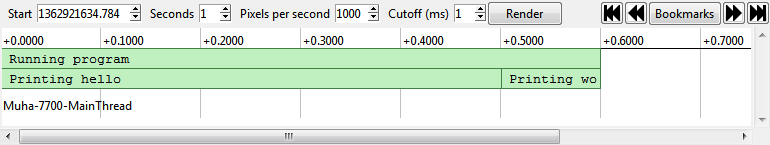

Context
Can you see what it is yet?
If you get the general idea from one screenshot and want to go straight to making it work, skip to the next section; for a detailed explanation of what's happening, read on...
The main Context view shows a chart of time vs. activity; time along the top (defaulting to 1000 pixels per second, though you can quickly zoom in and out), and activity (grouped by thread / process / server) along the side.
Looking at the first activity for Server #1, we can see a user was logging in – the whole action took about 0.8s; of which about 1/3 was checking the database, 1/3 was initialising their session, 1/6 was displaying the result ("You logged in!"), and 1/6 was overhead. Hovering over one of the activity blocks, we can get more details – we can see that the initialising the session took ~300ms, it happened ~400ms after recording started, and it happened in login.py.
The next activity is in red – Context saw that an exception was raised while dealing with this request, so it has flagged it as an error. Errored activities can be analysed in exactly the same way as normal ones, the colour is just to make them stand out – you can see at a glance if the reason for something being fast is that it crashed.
So how do I make it work?
For the full list of APIs and documentation, check out the Context APIs project on GitHub.
Here's a quick example of a couple of languages:
| Here's a program (In Python, though we also supply APIs for many other languages): | Here is the normal, manual way to add context to targeted sections of your code: |
Open up the log file in Context, and it's clear where the program is spending most of its time:

You probably could have guessed that by reading the code, but when your code becomes more complicated, Context remains as simple as ever. Civicboom is using it to hunt for performance issues in a ~50kloc codebase with no difficulty at all :-)
Annotations? Bleh.
Yeah, when trying to get a large amount of detail out of a small amount of code, as in these examples, the annotations do seem a little overwhelming; but you rarely need to annotate anywhere near that much — at civicboom we've found that three annotations (start/end of page view, start/end of database query, and start/end of template rendering) has helped us diagnose about 90% of our performance problems. Check out the full-size app example to see how much benefit you can get from 6 annotations over 40k lines of code.So; simple, solid, can it do anything else?
There are a few cool things that might not be immediately obvious:
- While Context was first developed for web apps, it works on all software; it's even been used to profile itself ;-)
- As well as logging activities and sub-activities, you can log bookmark points to make the data easier to navigate. For instance, when profiling a website you can stick a bookmark at the beginning of every page load. You can then easily skip backwards and forwards, or pick a specific bookmark from the list (Video).
- Logged text doesn't need to be static — instead of logging "Searching for user" you can log "Searching for user named Bob within 3 miles of Kentucky". Then if some searches are taking longer than others, you can see what it is about those searches that makes them different (Screenshot).
- You can zoom in and out with the mouse wheel, or click on an activity to focus on it, allowing you to easily see the sub-activities in detail (Video).
- Context makes an excellent companion for Monkey Swarm - with a hundred monkeys bashing away at your front end, giving you warnings like "Page X is unusually slow", you can use Context to look at Page X and see precisely what's happening under the hood. (Screenshot).
{kind=link}
{kind=link}
{kind=link}
{kind=link}
That's pretty cool, let me have a go!
If you're convinced already and want to start using it for your commercial projects, you can skip straight down to buy the commercial version; if you want to get to know it a bit better first, try the personal use / evaluation version, and then follow along with the examples.
If you have any issues running the demo versions, please let us know; we want you to be able to see how lovely they are :-)
Can I see how this works on a real problem?
Sure; for our first trick, let's find a performance problem with the open source gallery software, Shimmie. We don't know that there actually are any problems, but all software can be faster, right?
First things first, let's make the most basic of charts, showing the start and end of each page load. Opening up index.php:
So what does this look like?

Pretty much what we expected, pages are being loaded, 10-20 per second, no errors. But we knew that already; the web server logs access times, and there are plenty of tools for doing shallow analysis. Let's go a little bit deeper to see where Context shines.
For our next step, a little explanation of Shimmie internals — Shimmie is at its core a generic event-based framework for PHP; there are a set of plugins set up to listen for events (they have functions like onPageRequest(), onImageUpload(), onUserView(), etc), and a set of events. When the framework is loaded, it launches an InitExtEvent which triggers the plugins to initialise, and then a PageRequestEvent with details of the page being requested. This triggers a chain reaction of events being fired off in all directions, until eventually the reaction fizzles out, and the resulting page is delivered to the user.
Being an event-based framework, let's see what events are being sent where, and how long the plugins take to process them:

Now that we can see the stacks, two things jump out — the first is that InitExtEvent (which should be fairly instant) is taking a while to process, as it seems to be getting stuck in the IPBan plugin. The second is that the CommentList plugin is sending out hundreds of TextFormatting events, and even though they only take a millisecond each, a thousand of them per second starts to add up (the solid dark green block is events constantly starting and ending).
CommentList is only active for some pages, where IPBan does processing on every single page load — so let's look at IPBan first. Currently it takes about 100ms to load the list of banned IP addresses and scan through them.
Since we want to do some advanced pattern matching and remain compatible with simple databases like SQLite and MySQL, we need to load all the active bans and process them inside PHP. We don't need to load them from our already-stressed database though. Let's take some load off the database by putting the list in memcached:
Now what do the stacks look like?

Bans now take 8ms to process; we could probably improve that (lazily loading the user details rather than doing a JOIN on the whole table, for instance...), but it's fast enough that it pales in comparison to the rest of the processing.
Next on the list, the thousands of tiny events. Looking through the list of plugins, it seems that only the core formatter does any formatting, so sending out an event to alert everyone that formatting is happening is unnecessary. For a simple fix, let's just comment out the sending of that event. What's the result now?

From ~250ms per page down to 65ms, our server has gone from ~80% CPU use down to 20% — and with Context telling us exactly where our attention is needed, the whole process took under 15 minutes :-)
If you think this is as awesome as I do, buy it!
Awesome! Sign me up!
My payment-taking system broke, email me if you want a copy :P
Ooh! A new version! What's in it?
Follow Shish on twitter to keep up with updates as they happen~v2.0
- .0:
- Rewritten Compiler in Go for a 2x speed boost
- Rewritten Viewer in Go/GTK/Cairo for a ~100x speed boost
- Support for displaying lock states
- Stack depth controls
- Event coalescing -- rather than 1000 1-pixel events, see one block of "1000 x $event"
- Option to render bookmarks on the canvas
- Bake more data into the .cbin, so the same data isn't recalculated each time the file is opened
- Only show threads with content in the specified time range
- Better maths to avoid off-by-one-pixel rendering issues
- Way more error handling for corrupt files
{kind=link}
{kind=link}
{kind=link}
{kind=link}
{kind=link}
v1.2
- .1: Variable cutoff, faster data loading, faster rendering.
- .0: Work starts again \o/
v1.1
- .1: Fix for windows builds
- .0: API streamlining, self-profiling, options menu, toggle for showing 0ms events, delayed rendering, better tooltips, package fixes, demo build, rendering speed and fixes
v1.0
- .3: Experimental Java profiler hooks, faster browsing, OSX package tidying
- .2: Various optimisations for much faster data browsing
- .1: API tidyups, and experimental Python profiler hooks
- .0: Initial release
I have more questions!
Feel free to email us at webmaster@shishnet.org; paid customers recieve priority support, but we aim to answer all questions within a working day or two :-)